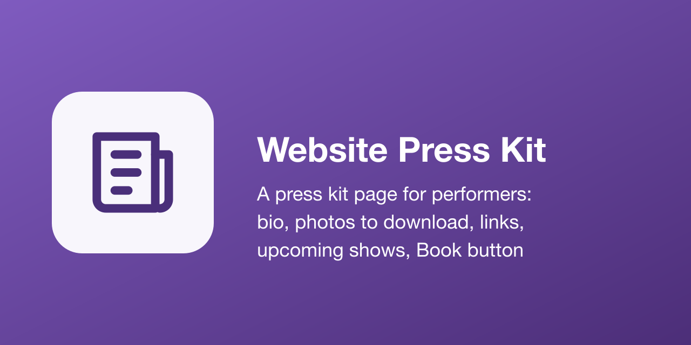

Promoters, venues and journalists ask every act for the same things: a bio, photos, something to listen to, and dates. This module puts them on one page of your website, at /press-kit.
Your upcoming events appear on it by themselves, and photos download at full size, so they print well.
With booking email and phone.
Shown at web size on the page; Download gives the original, with your caption and photo credit.
Links grouped as buttons; a technical rider to download.
Published events on this website, appearances included, straight from your Events app.
Laid out with your website's colors; each website has its own.
This module is free. Help installing, setting up or using it is available from Meskis Works with a support contract: sales@meskis.net.